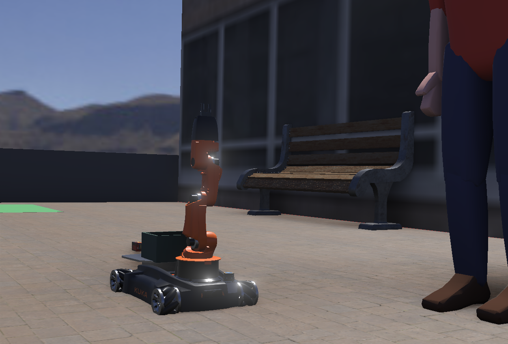
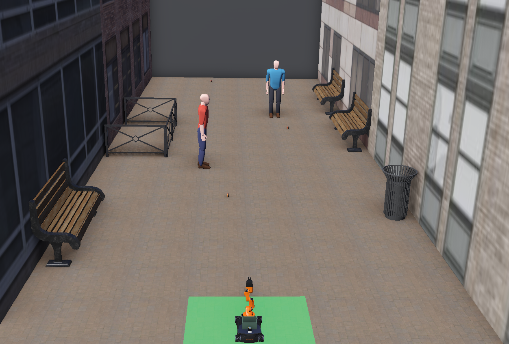
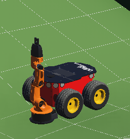

Nils Vähä-Vahe


flowchart TD
subgraph SENSORS["1. Havainnointi & Anturit (Webots + perception_node)"]
direction LR
S["Webots-anturit:
2D LiDAR, Kamera, IMU"] -->|"/scan, /camera, /wheel_odom"| P["perception_node.py
• LiDAR-törmäyskeilat
• Roskan 3D-paikka"]
end
subgraph BRAIN["2. Päättely & Tehtäväsuunnittelu (behavior_tree_node)"]
BT["behavior_tree_node.py (py_trees)
• Prioriteetti 1: Reaktiivinen esteiden väistö & hätäkeskeytys
• Prioriteetti 2: Kadun partiointi & roskien poiminta"]
end
subgraph ACTUATION["3. Toiminta & Säätö (base_controller + arm_fsm)"]
direction LR
PID["base_controller_node.py
Monisuuntainen PID (vx, vy, wz)
Ainoa /cmd_vel-julkaisija"] -->|"/cmd_vel"| W["Webots-toimilaitteet:
Mecanum-pyörät + käsivarsi"]
FSM["arm_fsm_node.py
8-tilainen käsivarsitilakone
(arm1..5 + tarttuja)"] -->|"/arm/joint_cmd"| W
end
%% Suora kerrosten välinen tiedonkulku solmulta solmulle
P -->|"/youbot/clearance, /youbot/trash_target"| BT
BT -->|"/youbot/base_mode"| PID
BT -->|"/arm/pick_trigger, /arm/abort"| FSM
FSM -.->|"/arm/pick_status"| BT
Yksi paketti (isoroba_cleaner_pkg, ADR-006) •
Modulaarisuus: Ohjaus- ja säätölogiikat eriytetty ROS 2:sta puhtaiksi Python-moduuleiksi pytest-yksikkötestausta varten.
/scan_front- ja /scan_rear-keilat tapahtumapohjaisesti.[-30°, +30°] törmäyskeilat julkaistaan erillisinä liukulukuina (/youbot/clearance/front, rear).[0°, +90°] ja oikeaa [-90°, 0°] puoliskoa väistösuunnan (recommended_turn) määrittämiseksi./camera/recognized_trash-aiheeseen.Recognition-merkkijonon ("biscuit box"), lisäksi geometrinen karsinta (korkeus z ≈ 0 m, ulottuvuus).camera_link → base_link ja lukitsee lähimmän roskan (/youbot/trash_target)./wheel_odom_raw aiheelle.
flowchart TD
Root["Juuri-Selector (Memory: False)"]
Safety["Sequence: Reaktiivinen turvallisuus (Prioriteetti 1)"]
Mission["Selector: Tehtävälogiikka (Prioriteetti 2)"]
ObsCheck(["IsObstacleTooClose?
(Etu-/takakeila + katvesuodatus)"])
Avoid["AvoidObstacle
(Poiminnan keskeytys /arm/abort
+ 2-vaiheinen väistö ja peruutus)"]
Collect["Sequence: LitterCollection"]
Patrol["PatrolStreet
(IMU-vakautettu katupartiointi)"]
Approach["DetectAndApproachTrash
(Odottaa /youbot/base_parked)"]
Pick["ExecuteArmSubFSM
(Käynnistää /arm/pick_trigger)"]
Root --> Safety
Root --> Mission
Safety --> ObsCheck
Safety --> Avoid
Mission --> Collect
Mission --> Patrol
Collect --> Approach
Collect --> Pick
/arm/abort).< 0.40 m) heijastukset käsivarren laskeutuessa säteen läpi poiminnan aikana.base_controller_node.py)/cmd_vel-julkaisija: Ohjaa nopeutta tilan /youbot/base_mode (IDLE, PATROL, APPROACH, AVOID) perusteella./youbot/base_parked = True, kun virheet pysyvät toleranssissa 5 peräkkäistä sykliä.arm_fsm_node.py)IDLE → PRE_GRASP → GRASP → CLOSE_GRIPPER → LIFT → DROP_IN_BIN → RELEASE_GRIPPER → RETURN_HOME)./joint_states-arvoja (arm1..5 sekä tarttujan sormet).FAILED, jos sormet painuvat täysin kiinni (< 0.002 m) ilman kappaletta.| ADR | Päätös | Perustelu ja kompromissi |
|---|---|---|
| ADR-001 | KUKA YouBot -alusta | Valmis Mecanum-alusta + 5-DOF-käsivarsi + roskasäiliö; vaihtaa maastokelpoisuuden tarkkaan sivuttaisliikkeeseen. |
| ADR-002 | Iso-Roban kävelykatumaailma | Tasainen katu poistaa ElevationGrid-rinteiden vääristämät LiDAR-kaiut säilyttäen realistiset kaupunkiesteet. |
| ADR-003 | Havainnointi & IMU-odometria | Erilliset LiDAR-etäisyysaiheet, kameran Recognition-suodatus ja IMU-vakautettu Mecanum-odometria. |
| ADR-004 | Hybridi BT + käsivarsi-FSM | Yhdistää py_trees-puun nopean reaktiivisuuden selkeään vaiheittaiseen käsivarren tilakoneeseen. |
| ADR-005 | Holonominen PID & tartunta | Samanaikainen (vx, vy, ωz) -säätö kohdistaa alustan suoraan kapean (4.2 cm) roskalaatikon eteen 0.45 m etäisyydelle. |
| ADR-006 | Yksi ROS 2 -pakettirakenne | 5 modulaarista solmua isoroba_cleaner_pkg-paketissa kurssin Docker- ja colcon build -työnkulun mukaisesti. |
| ADR-007 | Aluerajaus ja suojatiet (Rajaus) | Dokumentoi RTK-GPS-aluerajauksen ja dynaamisen liikenteen tunnistuksen puuttumisen tunnettuna PoC-rajauksena. |
IMU-vakautettu käytävänavigointi ja reaktiivinen 2D-LiDAR-väistö terassiaitojen ja penkkien ohi.
Mecanum-sivuttaisajo ja pysähtyminen tarkkaan 0.45 m poimintaetäisyyteen roskalaatikon eteen.
5-DOF-käsivarren FSM-vaiheet, suljetun silmukan sormitartunta ja roskan pudotus takasäiliöön.
Tekoäly auttoi läpi projektin uusien asioiden nopeammassa sisäistämisessä. Esimerkiksi Mermaid-kaaviot olivat useassa vaiheessa hyvä tapa hahmottaa ja sisäistää sisältöä.
Gemini 4 Argon (thinking: medium / high)Gemini 3.8 Flash (thinking: medium)Gemini 4 Hydrogen (thinking: medium / high)AGENTS.md): Kurssirepositorion käskytiedosto velvoitti mallia ilmoittamaan lähteet tiedon luotettavuuden varmistamiseksi.